<!DOCTYPE html>
<html lang="en">
  <head>
    <meta charset="utf-8" />
    <meta name="viewport" content="width=device-width, initial-scale=1.0, maximum-scale=1.0, user-scalable=no" />

    <title>B3</title>
    <link rel="stylesheet" href="dist/reveal.css" />
    <link rel="stylesheet" href="dist/theme/moon.css" id="theme" />
    <link rel="stylesheet" href="plugin/highlight/zenburn.css" />
	<link rel="stylesheet" href="css/layout.css" />
	<link rel="stylesheet" href="plugin/customcontrols/style.css">

	<link rel="stylesheet" href="plugin/reveal-pointer/pointer.css" />


    <script defer src="dist/fontawesome/all.min.js"></script>

	<script type="text/javascript">
		var forgetPop = true;
		function onPopState(event) {
			if(forgetPop){
				forgetPop = false;
			} else {
				parent.postMessage(event.target.location.href, "app://obsidian.md");
			}
        }
		window.onpopstate = onPopState;
		window.onmessage = event => {
			if(event.data == "reload"){
				window.document.location.reload();
			}
			forgetPop = true;
		}

		function fitElements(){
			const itemsToFit = document.getElementsByClassName('fitText');
			for (const item in itemsToFit) {
				if (Object.hasOwnProperty.call(itemsToFit, item)) {
					var element = itemsToFit[item];
					fitElement(element,1, 1000);
					element.classList.remove('fitText');
				}
			}
		}

		function fitElement(element, start, end){

			let size = (end + start) / 2;
			element.style.fontSize = `${size}px`;

			if(Math.abs(start - end) < 1){
				while(element.scrollHeight > element.offsetHeight){
					size--;
					element.style.fontSize = `${size}px`;
				}
				return;
			}

			if(element.scrollHeight > element.offsetHeight){
				fitElement(element, start, size);
			} else {
				fitElement(element, size, end);
			}		
		}


		document.onreadystatechange = () => {
			fitElements();
			if (document.readyState === 'complete') {
				if (window.location.href.indexOf("?export") != -1){
					parent.postMessage(event.target.location.href, "app://obsidian.md");
				}
				if (window.location.href.indexOf("print-pdf") != -1){
					let stateCheck = setInterval(() => {
						clearInterval(stateCheck);
						window.print();
					}, 250);
				}
			}
	};


        </script>
  </head>
  <body>
    <div class="reveal">
      <div class="slides"><section  data-markdown><script type="text/template"><!-- .slide: class="drop" -->
<div class="" style="position: absolute; left: 0px; top: 0px; height: 1200px; width: 1920px; min-height: 1200px; display: flex; flex-direction: column; align-items: center; justify-content: center" absolute="true">

# AI and the Future of Film and Media
## Part two
### B3 Festival of the Moving Image 2023

Dr Daniel Chávez Heras


[@chavezheras@sigmoid.social](https://sigmoid.social/@chavezheras)

[movingpixel.net](https://movingpixel.net/)
</div>

<aside class="notes"><p>Thank you for the invitation, delighted to be here.</p>
</aside></script></section><section  data-markdown><script type="text/template"><!-- .slide: class="drop" -->
<div class="" style="position: absolute; left: 0px; top: 0px; height: 1200px; width: 1920px; min-height: 1200px; display: flex; flex-direction: column; align-items: center; justify-content: center" absolute="true">

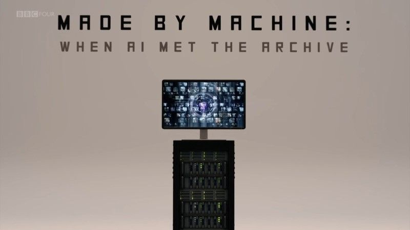
</div>

<aside class="notes"><p>A project in 2018 to &quot;machine-see&quot; the BBC television archive, and &quot;machine-edit&quot; new sequences &quot;television by the meter&quot; ―we jokingly referred to it.</p>
<p>Aired on BBC 4 on September 2018, seen by half a million people in the UK.
It included four sections that corresponded to different computational techniques to traverse the archive: including text analysis over subtitled material, object detection, motion estimation (visual energy), and a mixed between the three (what we would call today a multimodal method).</p>
</aside></script></section><section  data-markdown><script type="text/template"><!-- .slide: class="drop" -->
<div class="" style="position: absolute; left: 0px; top: 0px; height: 1200px; width: 1920px; min-height: 1200px; display: flex; flex-direction: column; align-items: center; justify-content: center" absolute="true">

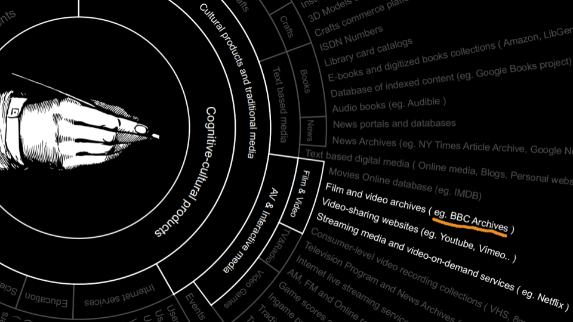
</div>

<aside class="notes"><p>This was a project in experimental television, in hindsight it was very much of its time, and frankly, as time goes by I am more and more surprised that no one stopped us from doing it. </p>
<p>In light of everything that happened after with AI, this project stands a somewhat of a quaint expression of many of the issues discussed yesterday, from access and copyright, to the role of generative technologies and their impact on screen culture today.</p>
</aside></script></section><section  data-markdown><script type="text/template"><!-- .slide: class="drop" -->
<div class="" style="position: absolute; left: 0px; top: 0px; height: 1200px; width: 1920px; min-height: 1200px; display: flex; flex-direction: column; align-items: center; justify-content: center" absolute="true">

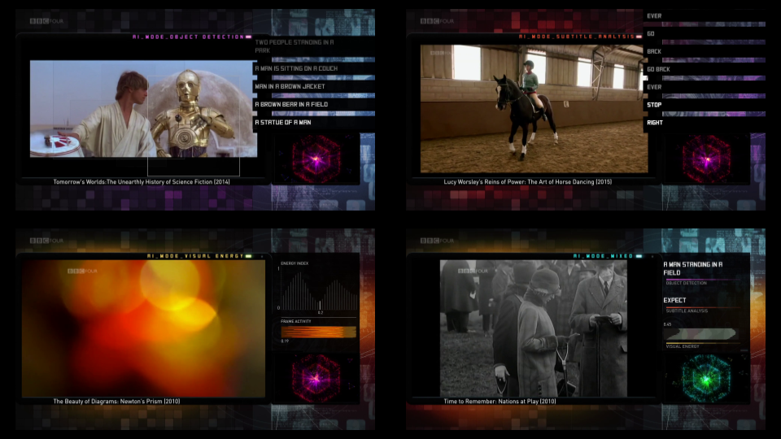
</div></script></section><section  data-markdown><script type="text/template"><!-- .slide: class="drop" -->
<div class="" style="position: absolute; left: 0px; top: 0px; height: 1200px; width: 1920px; min-height: 1200px; display: flex; flex-direction: column; align-items: center; justify-content: center" absolute="true">

- 'too confusing in format' (+65)

- 'Disjointed' (+65)

- 'Crud, I turn off after a few minutes as it was difficult to follow and understand.' (+65)

- 'Very strange programme' (55-64)

- 'A nice idea using an AI algorythm to select programmes given a seed and watching how the process. Would liked to have known more about the programme used, such as machine language etc' [sic] (55-64)

- 'very interesting' (45-54)

- 'I was intrigued by the concept. I liked the presenter. It was interesting to see how the AI interpreted the film clips and the mistakes it made.' (45-54) 

- 'it's like ocd twitter while watching tv but more interesting' (digital spy)
</div></script></section><section  data-markdown><script type="text/template"><!-- .slide: class="drop" -->
<div class="" style="position: absolute; left: 0px; top: 0px; height: 1200px; width: 1920px; min-height: 1200px; display: flex; flex-direction: column; align-items: center; justify-content: center" absolute="true">

Computational Spectatorship

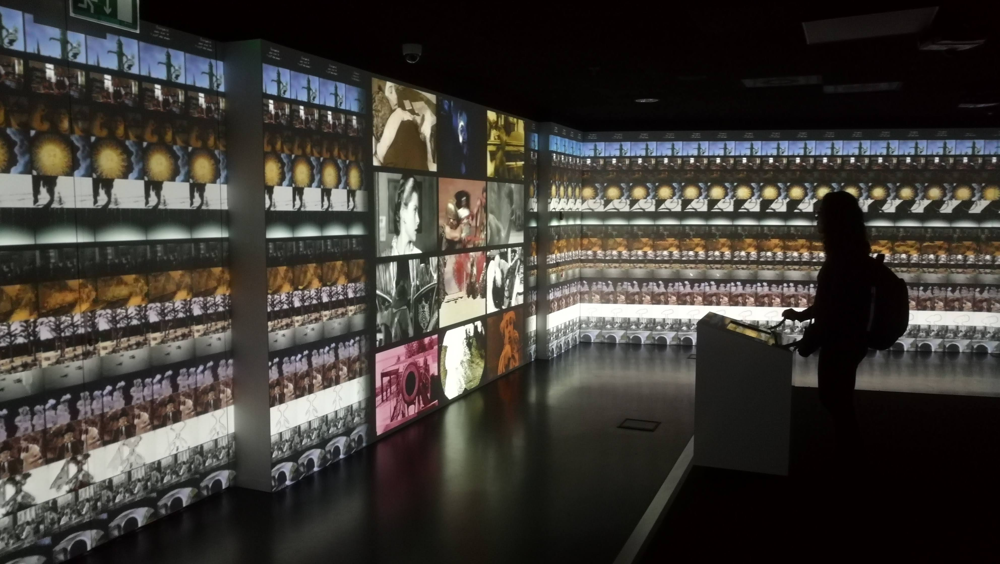
</div>

<aside class="notes"><p>Archives are made for humans, datasets are by humans for machines.</p>
<p>Oversimplification: we know machines are made by and for humans too, but still, the purpose of their </p>
<p>Archives are created under a historical impulse; they are organised according to the record-keeping needs of the cultures that build them. This historical impulse requires system that facilitates cataloguing and retrieval, and that aspires to a certain degree of historical accuracy, integrity, and permanence.</p>
<p>Datasets also respond to the sense-making needs of the cultures that build them, but they come together to lay claim on the future more than the past, usually in response to specific problems and questions that need solving, which is to say they are much more instrumental.</p>
<p>In data science and machine learning engineering, datasets tend to be granular, flattened to matrix-like structures whose individual items are not meant to be publicly accessible or even individually meaningful to human observers.</p>
<p>Arguably, contemporary AI has succeeded precisely for not caring at all about whether specific media artefacts are deemed significant enough to go ‘on the record’, and be keept for posterity, with all the cost implications that this kind of collective memory keeping entails, but because of the opposite approach, by voraciously ingesting heaps of data that in themselves were not canonical or significant. </p>
<p>I would got a step further still, and say that archives and datasets produce value in almost opposite ways: while archives endow their constituent artefacts and records with additional symbolic layers, making them stable and tractable, datasets that feed contemporary AI systems atomise these artefacts, stripping them from context in order to make patterns visible through computational processing. In the first case value is produced by stability and addressability, in the second by aggregation and mutability.</p>
</aside></script></section><section  data-markdown><script type="text/template"><!-- .slide: class="drop" -->
<div class="" style="position: absolute; left: 0px; top: 0px; height: 1200px; width: 1920px; min-height: 1200px; display: flex; flex-direction: column; align-items: center; justify-content: center" absolute="true">

## Data palimpsests

| Artefact     | Processing level       | Example                                                     |
|--------------|------------------------|-------------------------------------------------------------|
| Cinema       | Social – aggregate     | Popular Hollywood cinema                                    |
| Film         | Human                  | Jurassic Park (1993)                                        |
| Clip         | Human/computer         | Raptors in the Kitchen Scene (https://youtu.be/dnRxQ3dcaQk) |
| Shot         | Human-computer         | 130 frames (5.421 s)                                        |
| Frame        | Computer/human         | Individual frame (512 × 340 pixels)                         |
| Pixels       | Numeric – disaggregate | Vector ([176800x1]); Tensor ([16, 3, 340, 512])             |
</div>

<aside class="notes"><p>Yet, there is a relation between archives and datasets.
Each of the films contained in a film archive can be thought of a dataset of frames, and every frame as dataset of pixels.  Through computing, individual frames and their pixels can relate much more freely, not only to other frames in the same film, but to a multitude of other frames in a multitude of other films, in high-dimensional spaces where every pixel might be put in contact with any other.</p>
<p>This table exemplifies the palimpsest of artefacts and levels of analysis at play between audiovisual archives, comprised of artefacts, and datasets atomised for machine learning operations. The epistemic gap between the two ends of the table are yet to be fully understood in the configuration of a computational archive.</p>
</aside></script></section><section  data-markdown><script type="text/template"><!-- .slide: class="drop" -->
<div class="" style="position: absolute; left: 0px; top: 0px; height: 1200px; width: 1920px; min-height: 1200px; display: flex; flex-direction: column; align-items: center; justify-content: center" absolute="true">

## Data Analysis and Media Synthesis


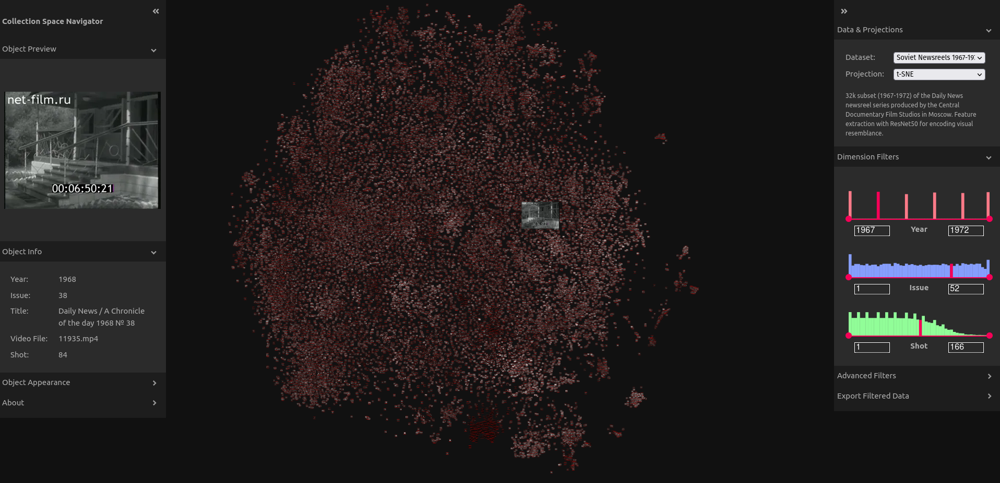
</div>

<aside class="notes"><p>Analytic and generative approaches in computing tend to be split between scientific and creative domains, with their respective tools and communities of practice.</p>
<p>Deployed as analytical engines, computers can be used to find patterns across vast collections of imagery, and these patterns are often expressed as relations of proximity in space. We have seen examples of this yesterday in multiple way of projecting archives onto 2d or 3d spaces.</p>
<p>The image in this slide shows a t-SNE mapping of a collection of soviet news reels. The dataset and the tool were developed by colleagues in CUDAN from the cultural data analytics lab in Tallinn, Estonia.</p>
<p>But to amount to knowledge, these spatial correlations require interpretation and explanation, which require relations of necessity, not just proximity, and tend to unfold sequentially, as researchers, critics and users seek to organise these patterns to infer causal relations and plausible reasons for data objects and events to be organised in space the way they are.</p>
<p>By coupling an analytical engine with a generative one, computing can be used to configure narratives about these proximity patterns and enable explanatory propositions through compositional techniques familiar to media scholarship.</p>
</aside></script></section><section  data-markdown><script type="text/template"><!-- .slide: class="drop" -->
<div class="" style="position: absolute; left: 0px; top: 0px; height: 1200px; width: 1920px; min-height: 1200px; display: flex; flex-direction: column; align-items: center; justify-content: center" absolute="true">

## Supercuts


>Just as capitalism treated workers as machines as a prelude to workers being replaced by machines, so also supercutters simulate database thinking in apparent anticipation of a moment, perhaps in the near future, when **neural networks will be able to search the entirety of digitized film history and create supercuts themselves, automatically**.

\- Max Tohline, 2021


>In the near future there will be a simple software or app, feeding its algorithm with keywords and other elements of interest, which will **automatically generate a perfect supercut of media content of any kind within a blink of an eye**.

\- Miklós Kiss, 2013
</div>

<aside class="notes"><p>a supercut is an editing technique in which short video clips with common motifs or salient stylistic characteristics are extracted from their original context and are sequenced together in a montage. The commonalities are highlighted through repetition and interpreted by viewers as a form of <em>aboutness</em>, which then becomes the thematic content of the supercut.</p>
<p>The supercut entails not simply a mode of editing, but a mode of thinking expressed by a mode of editing.</p>
</aside></script></section><section  data-markdown><script type="text/template"><!-- .slide: class="drop" -->
<div class="" style="position: absolute; left: 0px; top: 0px; height: 1200px; width: 1920px; min-height: 1200px; display: flex; flex-direction: column; align-items: center; justify-content: center" absolute="true">

## Computational supercuts


<iframe title="vimeo-player" src="https://player.vimeo.com/video/830237949?h=5fb9301c4d" width="1500" height="1250" frameborder="0"    allowfullscreen></iframe>
</div>

<aside class="notes"><p>This was made using a tool called VGREP, developed by artist and creative coder Sam Lavigne as part of a small project funded through a small grant I got last year to explore computational media formats.</p>
<p>The tool takes a video file as an input, transcribes its dialogue, and then analyses the text to find common ngrams. These can then selected and edited as a supercut.</p>
<p>The lecture was called &quot;Modeling Doubt, Coding Humility&quot; and through this technique I found there were many more mentions of doubt than of coding or humility (the lecture however was ver good).</p>
<p>I wanted to take this idea a step forward and see if a similar effect could be achieved by operating directly on the images, automating a supercut of visual characteristics.</p>
</aside></script></section><section  data-markdown><script type="text/template"><!-- .slide: class="drop" -->
<div class="" style="position: absolute; left: 0px; top: 0px; height: 1200px; width: 1920px; min-height: 1200px; display: flex; flex-direction: column; align-items: center; justify-content: center" absolute="true">

## Movie Clips YouTube channel
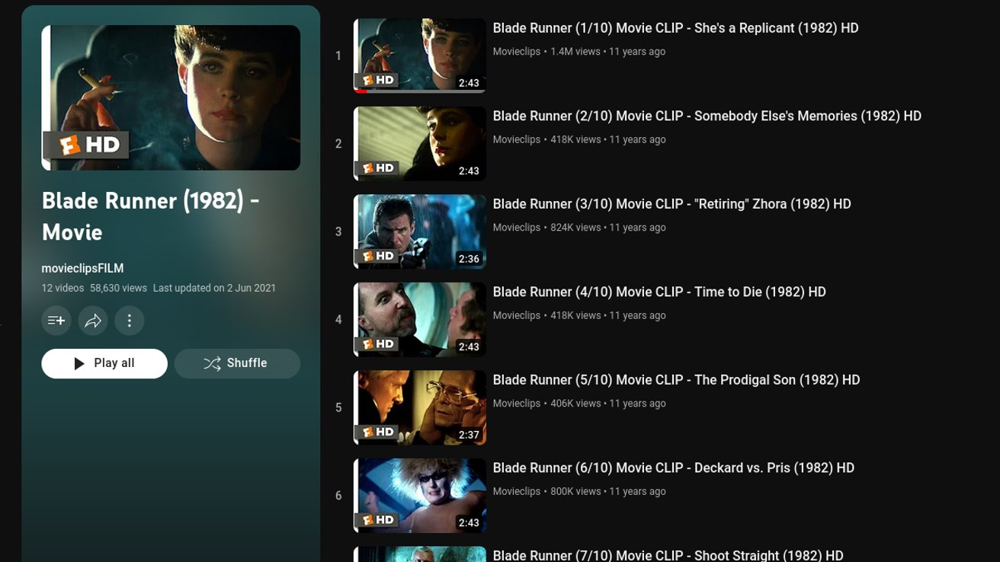
</div>

<aside class="notes"><p>An archive-like collection that is publicly available online: the <em>Movieclips</em> YouTube channel (<a href="https://journals.sagepub.com/doi/full/10.1177/13548565231174592#bibr29-13548565231174592">2006</a>), which serves as a corpus that is both large and consistent enough to be analysed and intervened using computational methods. </p>
<p>This channel is operated by the American media company <em>Fandango</em>, which owns the popular review aggregator website <em>Rotten Tomatoes</em>, and the recommender platform <em>Flixter</em>, and which is itself jointly owned by the Warner and Universal media conglomerates. </p>
<p>In their YouTube channel <em>Movieclips</em> is described as ‘the largest collection of licensed movie clips on the web’. At the time of writing, it had over 58 million subscribers and almost 60 billion aggregated views. </p>
<p>In terms of access, these numbers dwarf most film archives, but it is important to note that in terms of breadth and diversity, these movie clips are only one deep but thin slice of global film production, namely, recent Hollywood popular cinema licenced by these large media companies.</p>
</aside></script></section><section  data-markdown><script type="text/template"><!-- .slide: class="drop" -->
<div class="" style="position: absolute; left: 0px; top: 0px; height: 1200px; width: 1920px; min-height: 1200px; display: flex; flex-direction: column; align-items: center; justify-content: center" absolute="true">

## Movie Clips Corpus

- 2691 clips 
- 350 films
- From 1931 to 2019
- 287 unique directors
</div></script></section><section  data-markdown><script type="text/template"><!-- .slide: class="drop" -->
<div class="" style="position: absolute; left: 0px; top: 0px; height: 1200px; width: 1920px; min-height: 1200px; display: flex; flex-direction: column; align-items: center; justify-content: center" absolute="true">

## Pre-trained FER detection 

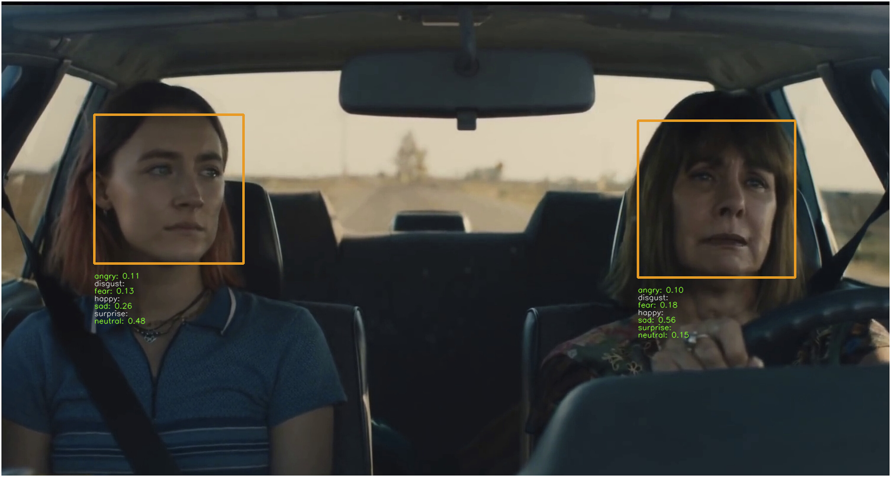
</div></script></section><section  data-markdown><script type="text/template"><!-- .slide: class="drop" -->
<div class="" style="position: absolute; left: 0px; top: 0px; height: 1200px; width: 1920px; min-height: 1200px; display: flex; flex-direction: column; align-items: center; justify-content: center" absolute="true">

## Shot scale detector


</div></script></section><section  data-markdown><script type="text/template"><!-- .slide: class="drop" -->
<div class="" style="position: absolute; left: 0px; top: 0px; height: 1200px; width: 1920px; min-height: 1200px; display: flex; flex-direction: column; align-items: center; justify-content: center" absolute="true">

## Feature Engineering

|Feature|Value|
|:----|:----|
|People|1|
|Scale|23.2|
|Inferred motion|0.24|
|Scale category|‘CU’|
|Inferred motion category|‘Stable’|
|Top emotion|‘Angry’|
|Top emotion confidence|0.79|
</div></script></section><section  data-markdown><script type="text/template"><!-- .slide: class="drop" -->
<div class="" style="position: absolute; left: 0px; top: 0px; height: 1200px; width: 1920px; min-height: 1200px; display: flex; flex-direction: column; align-items: center; justify-content: center" absolute="true">

## Shot duration distribution


</div>

<aside class="notes"><p>conventional statistics give overview of this dataset of shots</p>
</aside></script></section><section  data-markdown><script type="text/template"><!-- .slide: class="drop" -->
<div class="" style="position: absolute; left: 0px; top: 0px; height: 1200px; width: 1920px; min-height: 1200px; display: flex; flex-direction: column; align-items: center; justify-content: center" absolute="true">

## Shot scale breakdown


</div>

<aside class="notes"><p>more sophisticated tools to do this now, like Cineshot deep learning method to find shot scale in films</p>
</aside></script></section><section  data-markdown><script type="text/template"><!-- .slide: class="drop" -->
<div class="" style="position: absolute; left: 0px; top: 0px; height: 1200px; width: 1920px; min-height: 1200px; display: flex; flex-direction: column; align-items: center; justify-content: center" absolute="true">

## Shot emotion breakdown


</div>

<aside class="notes"><p>the obvious caveats of this is the simplification of emotions to few categories, an approach that has been criticised and widely updated in psychology.</p>
</aside></script></section><section  data-markdown><script type="text/template"><!-- .slide: class="drop" -->
<div class="" style="position: absolute; left: 0px; top: 0px; height: 1200px; width: 1920px; min-height: 1200px; display: flex; flex-direction: column; align-items: center; justify-content: center" absolute="true">

## shot scale supercut
<iframe src="https://player.vimeo.com/video/602000956?h=71ac4fdc22" width="1500" height="1250" frameborder="0" allow="autoplay; fullscreen; picture-in-picture" allowfullscreen></iframe>
<p><a href="https://vimeo.com/602000956">Big Angry Faces v.01</a> from <a href="https://vimeo.com/chavezheras">Daniel Ch&aacute;vez Heras</a> on <a href="https://vimeo.com">Vimeo</a>.</p>
</div>

<aside class="notes"><p>On the one  hand the computational supercut involves applying computer vision methods to annotate large collections of moving images to find patterns, much in the guise of cultural analytics. </p>
<p>But on the other, as well as plotting these images in space to view them at a distance, to make sense of them we need to reinscribe these patterns in time, giving data objects a duration again, and enabling interpretation through the familiar operations of montage and the syntactic and synoptic apparatus of (dis)continuity as a modality for meaning making and explanation. </p>
<p>The kind of reverse editing proposed in the computational supercut links in this way analytical and creative epistemic strategies: knowledge and value created through the making and unmaking of moving imagery; visual culture that feeds AI that feeds back into visual culture.&gt;)</p>
</aside></script></section><section  data-markdown><script type="text/template"><!-- .slide: class="drop" -->
<div class="" style="position: absolute; left: 0px; top: 0px; height: 1200px; width: 1920px; min-height: 1200px; display: flex; flex-direction: column; align-items: center; justify-content: center" absolute="true">

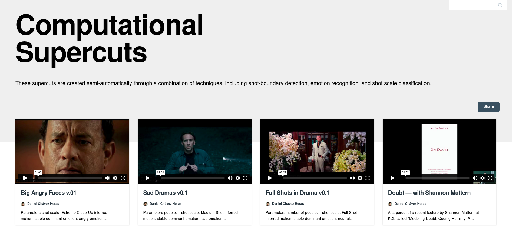
</div>

<aside class="notes"><p>I have experimented further with this type of parametric sampling/editing, and some of these experiments can be found online. If there is enough interest I might develop the technique further and might distribute it as a tool that can be used in other collections.</p>
</aside></script></section><section  data-markdown><script type="text/template"><!-- .slide: class="drop" -->
<div class="" style="position: absolute; left: 0px; top: 0px; height: 1200px; width: 1920px; min-height: 1200px; display: flex; flex-direction: column; align-items: center; justify-content: center" absolute="true">

## Continuity Matrix (Noël Burch)

| **Time**/**Space** | **Continuous** | **Ellipsis (definite)** | **Ellipsis (indefinite)** | **Time reversal (definite)** | **Time reversal (indefinite)** |
| ------------------- | -------------- | ----------------------- | ------------------------- | ---------------------------- | ------------------------------ |
| Continuous          | CC             | CE                      | CEi                       | CR                           | CRi                            |
| Contiguous          | CtC            | CtE                     | CtEi                      | CtR                          | CtRi                           |
| Discontinuous       | DC             | DE                      | DEi                       | DR                           | DRi                            |
</div>

<aside class="notes"><p>But we know we make sense of images not only by what is shown on screen, but by what is omitted. Arguably, films convey as much meaning through time elision than they do through time recording.</p>
<p>Therefore, in order to model a “computational Burch” we need both the edit points that separate one shot from the next <em>and</em> an annotation of what viewers infer to be in-between the shots. This second signal is much more elusive because it needs to be encoded form a subjective unconscious process that appears to leave no traces.</p>
</aside></script></section><section  data-markdown><script type="text/template"><!-- .slide: class="drop" -->
<div class="" style="position: absolute; left: 0px; top: 0px; height: 1200px; width: 1920px; min-height: 1200px; display: flex; flex-direction: column; align-items: center; justify-content: center" absolute="true">

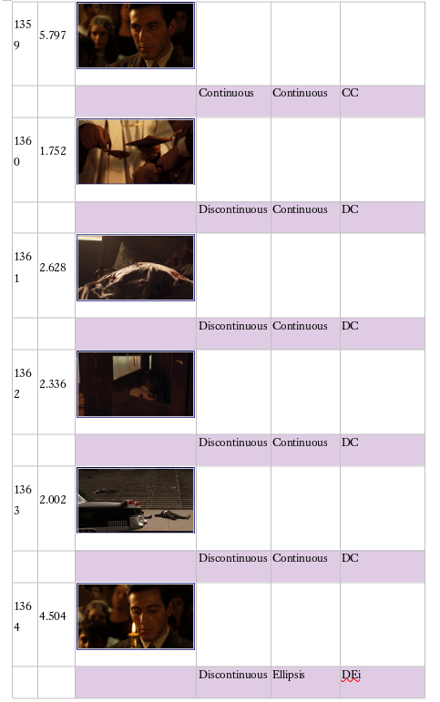
</div></script></section><section  data-markdown><script type="text/template"><!-- .slide: class="drop" -->
<div class="" style="position: absolute; left: 0px; top: 0px; height: 1200px; width: 1920px; min-height: 1200px; display: flex; flex-direction: column; align-items: center; justify-content: center" absolute="true">

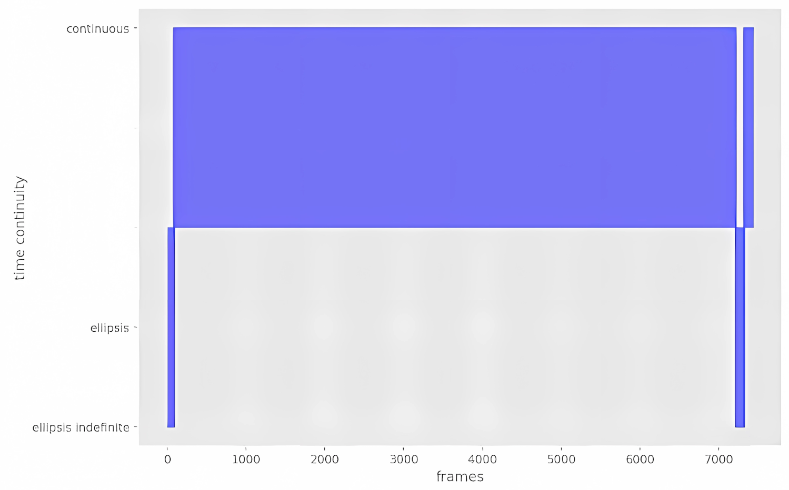
</div></script></section><section  data-markdown><script type="text/template"><!-- .slide: class="drop" -->
<div class="" style="position: absolute; left: 0px; top: 0px; height: 1200px; width: 1920px; min-height: 1200px; display: flex; flex-direction: column; align-items: center; justify-content: center" absolute="true">

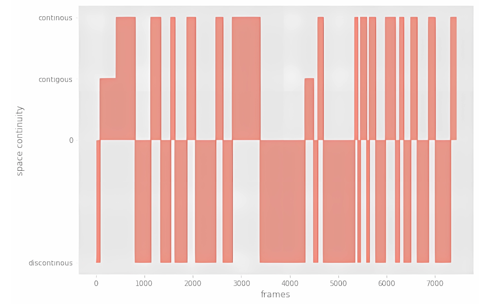
</div>

<aside class="notes"><p>Note that while the patterns above reflect the parallel editing technique in this sequence, they are not representations of the shots themselves, but of the relations between them as inferred by a viewer; the subjective invisible that makes the objective visible meaningful.</p>
</aside></script></section><section  data-markdown><script type="text/template"><!-- .slide: class="drop" -->
<div class="" style="position: absolute; left: 0px; top: 0px; height: 1200px; width: 1920px; min-height: 1200px; display: flex; flex-direction: column; align-items: center; justify-content: center" absolute="true">

# AI and the future of film
</div></script></section><section  data-markdown><script type="text/template"><!-- .slide: class="drop" -->
<div class="" style="position: absolute; left: 0px; top: 0px; height: 1200px; width: 1920px; min-height: 1200px; display: flex; flex-direction: column; align-items: center; justify-content: center" absolute="true">

>The cinematographer was a mechanical eye cast **on** society while inductive machine vision is a computational eye drawn **from** society; the former can reflect or obscure existing power relations, the latter embodies them.
</div></script></section><section  data-markdown><script type="text/template"><!-- .slide: class="drop" -->
<div class="" style="position: absolute; left: 0px; top: 0px; height: 1200px; width: 1920px; min-height: 1200px; display: flex; flex-direction: column; align-items: center; justify-content: center" absolute="true">


</div></script></section><section  data-markdown><script type="text/template"><!-- .slide: class="drop" -->
<div class="" style="position: absolute; left: 0px; top: 0px; height: 1200px; width: 1920px; min-height: 1200px; display: flex; flex-direction: column; align-items: center; justify-content: center" absolute="true">

# End of part two
</div></script></section><section  data-markdown><script type="text/template"></script></section></div>
    </div>

    <script src="dist/reveal.js"></script>

    <script src="plugin/markdown/markdown.js"></script>
    <script src="plugin/highlight/highlight.js"></script>
    <script src="plugin/zoom/zoom.js"></script>
    <script src="plugin/notes/notes.js"></script>
    <script src="plugin/math/math.js"></script>
	<script src="plugin/mermaid/mermaid.js"></script>
	<script src="plugin/chart/chart.min.js"></script>
	<script src="plugin/chart/plugin.js"></script>
	<script src="plugin/menu/menu.js"></script>
	<script src="plugin/customcontrols/plugin.js"></script>
	<script src="plugin/reveal-pointer/pointer.js"></script>

    <script>
      function extend() {
        var target = {};
        for (var i = 0; i < arguments.length; i++) {
          var source = arguments[i];
          for (var key in source) {
            if (source.hasOwnProperty(key)) {
              target[key] = source[key];
            }
          }
        }
        return target;
      }

	  function isLight(color) {
		let hex = color.replace('#', '');

		// convert #fff => #ffffff
		if(hex.length == 3){
			hex = `${hex[0]}${hex[0]}${hex[1]}${hex[1]}${hex[2]}${hex[2]}`;
		}

		const c_r = parseInt(hex.substr(0, 2), 16);
		const c_g = parseInt(hex.substr(2, 2), 16);
		const c_b = parseInt(hex.substr(4, 2), 16);
		const brightness = ((c_r * 299) + (c_g * 587) + (c_b * 114)) / 1000;
		return brightness > 155;
	}

	var bgColor = getComputedStyle(document.documentElement).getPropertyValue('--r-background-color').trim();
	var isLight = isLight(bgColor);

	if(isLight){
		document.body.classList.add('has-light-background');
	} else {
		document.body.classList.add('has-dark-background');
	}

      // default options to init reveal.js
      var defaultOptions = {
        controls: true,
        progress: true,
        history: true,
        center: true,
        transition: 'default', // none/fade/slide/convex/concave/zoom
        plugins: [
          RevealMarkdown,
          RevealHighlight,
          RevealZoom,
          RevealNotes,
          RevealMath.MathJax3,
		  RevealMermaid,
		  RevealChart,
		  RevealCustomControls,
		  RevealMenu,
	      RevealPointer,
        ],


    	allottedTime: 120 * 1000,

		mathjax3: {
			mathjax: 'plugin/math/mathjax/tex-mml-chtml.js',
		},
		markdown: {
		  gfm: true,
		  mangle: true,
		  pedantic: false,
		  smartLists: false,
		  smartypants: false,
		},

		mermaid: {
			theme: isLight ? 'default' : 'dark',
		},

		customcontrols: {
			controls: [
				{id: 'toggle-overview',
				title: 'Toggle overview (O)',
				icon: '<i class="fa fa-th"></i>',
				action: 'Reveal.toggleOverview();'
				},
			]
		},
		menu: {
			loadIcons: false
		}
      };

      // options from URL query string
      var queryOptions = Reveal().getQueryHash() || {};

      var options = extend(defaultOptions, {"width":1920,"height":1200,"margin":0,"controls":true,"progress":true,"slideNumber":true,"transition":"slide","transitionSpeed":"default"}, queryOptions);
    </script>

    <script>
      Reveal.initialize(options);
    </script>
  </body>

  <!-- created with Advanced Slides -->
</html>
